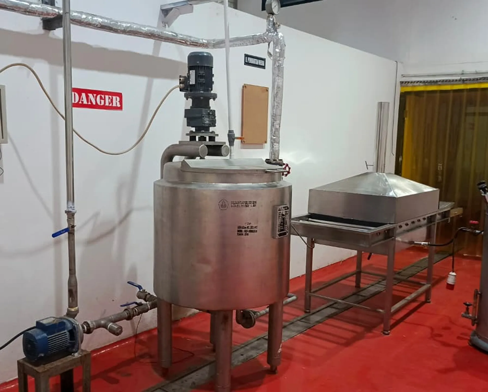

Alat Dalam Proses Produksi
Berbagai mesin modern berstandar industri yang digunakan untuk mendukung proses produksi ikan kaleng di Teaching Factory (TEFA) Fish Canning POLIJE.

Berbagai mesin modern berstandar industri yang digunakan untuk mendukung proses produksi ikan kaleng di Teaching Factory (TEFA) Fish Canning POLIJE.